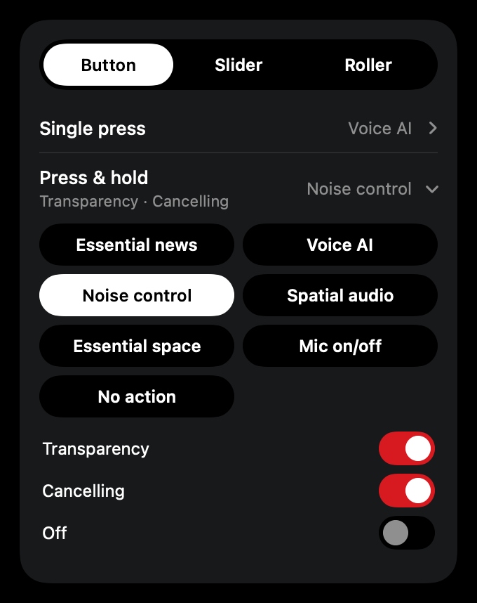

Your Nothing audio, in the Mac menu bar.
Switch noise control, change the EQ and check battery without reaching for your phone. A free, open-source companion for Nothing and CMF earbuds and headphones.
Everything from Nothing X, one click away
It recognises your exact model and colour, and only shows the controls your device actually has.
Noise control with your model's strength levels, presets and a custom EQ.
Battery for each bud and the case, with ring buttons for when one goes missing.

Remap taps, pinches, buttons, sliders and rollers, down to the noise control cycle.
- Battery in the menu bar, for buds, case or headphones
- Noise cancelling, transparency and personalised ANC
- EQ presets, custom and advanced parametric EQ
- Bass enhance and ultra bass
- Spatial audio and low latency mode
- In-ear detection and the ear-tip fit test
- Dual connection with your paired devices
- Audio codec: AAC, LHDC or LDAC
- Find my device
- Super Mic, walkie-talkie and the rest of your model's extras
Works with your earbuds and headphones
Every model the ear-web project supports, in every colour.
NOTHING
- Ear (1), Ear (2), Ear (stick)
- Ear, Ear (a), Ear (open)
- Ear (3), Ear (3a)
- Headphone (1), Headphone (1) Pro
- Headphone (a)
CMF
- Buds, Buds Pro, Buds Pro 2
- Buds 2, Buds 2 Plus, Buds 2a
- Clip Pro
- Headphone Pro
- Neckband Pro
So far it's been tested on the CMF Headphone Pro. If yours behaves differently, an issue on GitHub helps get it right.
Install in a minute
The app isn't notarised by Apple yet, so macOS asks you to approve it once.
- 1Download the latest release. It's a small disk image from GitHub.
- 2Drag Nothing on Mac into Applications.
- 3Open it, then allow it once. When macOS says it can't check the app, go to System Settings, Privacy & Security, and click Open Anyway.
- 4Allow Bluetooth. Connect your device to the Mac as usual and the app finds it. It starts with your Mac from then on.
Built on ear-web
Nothing on Mac exists because of ear-web, the unofficial browser app by RapidZapper and Bendix. They worked out how Nothing and CMF devices talk over Bluetooth and keep up with every new model. This app wraps that work in a native Mac home. If it's useful to you, go and give them a star too.
ear-web on GitHub